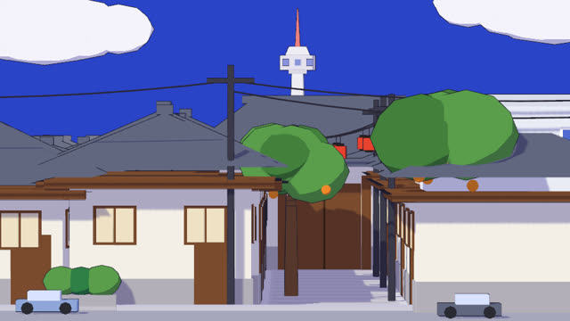
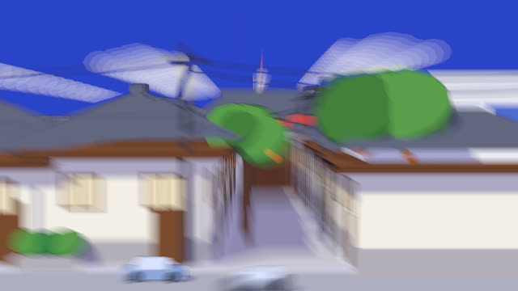
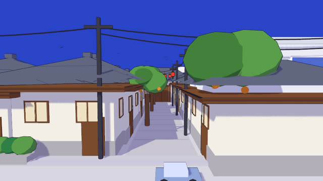
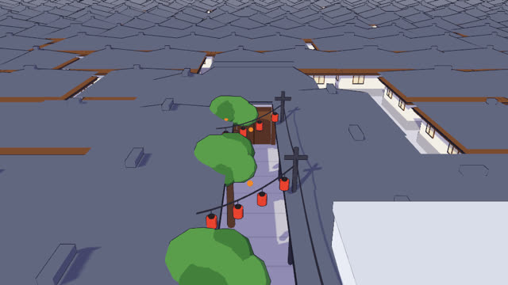
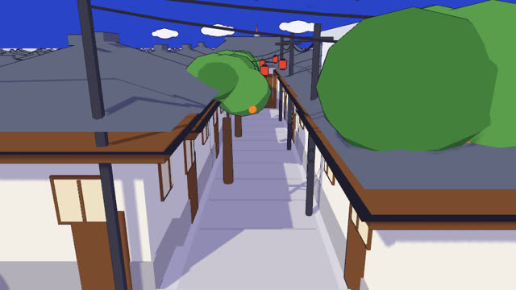
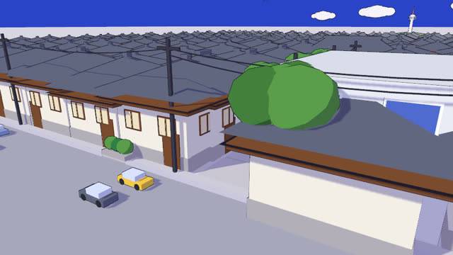
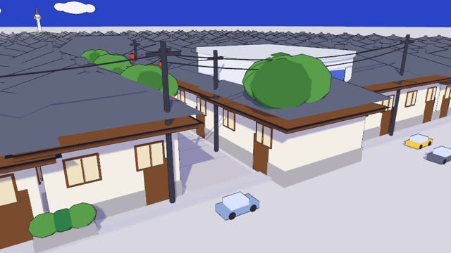

작업 흐름
- 입력
- 주제 하나 (동네, 거리, 항구, 캠퍼스, 상상의 마을 …)
- 브리프
- 장소와 건물 말투, 앞줄, 틈, 평면에서 틈을 메우는 것, 지붕선 위로 보이는 랜드마크, 팔레트, 움직이는 것, 박자, 소리
- 장면
- 부품 키트로 짓는 3D 마을, 지붕선 아래로 숨긴 뒤쪽 마을(F.hide), 1초마다 평면 ↔ 돌리 줌 · 크레인 · 궤도
- 검사
- 이음매 없는 루프, 평면 화면을 채우는지, 랜드마크가 보이고 3배 이상 작아지는지, 벽에 붙은 카메라
- 출력
- 1920×1080 MP4(반복 횟수 선택), 소리 나는 라이브 페이지, BRIEF.md
cd parallax-facade/examples/hanok-alley
node ../../scripts/check.mjs index.html
node ../../scripts/render.mjs index.html --sheet 9 --scale .4 --q blur=1
node ../../scripts/score.mjs --mp3
node ../../scripts/render.mjs index.html --audio out/loop.wav
node ../../scripts/new-film.mjs ~/my-loop # 새 루프요구 사항: Node + Playwright Chromium, ffmpeg. npm 설치, GPU, API 키는 필요 없습니다. 단계별 순서는 SKILL.md에 있습니다.
샘플
예제와 템플릿의 박자별 장면입니다. 카드를 누르면 라이브 데모가 그 순간에서 열립니다.
Hanok Alley 예제 · 잉크 · 8초
원본에 없는 주제로 만든 예제입니다. 기와 한옥 앞줄, 틈을 메운 나무 대문, 지붕선 위의 방송탑이 한 장의 그림처럼 보이다가 감나무와 전깃줄이 늘어선 골목으로 열립니다.

평면 · 0.3초한 장의 그림화각 6°, 눈높이를 지붕선에, 틈은 대문이 메움

이동 · 0.8초돌리 줌화각을 넓히며 다가가 앞줄 크기는 고정, 서브프레임 모션 블러

깊이 · 1.3초틈은 골목이었다대문은 26 m 뒤, 방송탑은 150 m 뒤에서 6배 작아짐

조감 · 2.3초지붕 아래 숨은 동네뒤쪽 집은 모두 평면 화면의 지붕선 아래 높이(F.hide)

크레인 · 3.3초골목 위로피벗을 골목 안 0.4H로, 16° 내려다봄

궤도 · 5.3초오른쪽으로낮은 마을에 맞춰 줌 1.3, 18°로 덮어씀

궤도 · 7.3초왼쪽으로, 그리고 평면0.42초 만에 처음 그림으로 돌아와 이음매 없이 반복
Clock Square 템플릿 · 파스텔 · 8초
새 루프의 출발점입니다. 파스텔 상점 줄, 30 m 뒤의 문, 82 m 뒤의 시계탑이 한 장의 그림으로 겹칩니다.
실제 작품
이 스킬은 X에 올라온 시각차 영상 두 편을 보고 기법(평면 화면, 돌리 줌, 박자, 소리)을 측정해 만들었습니다. 원본 영상은 담지 않았고, 장면은 모두 주제마다 새로 설계합니다.
링크
- SKILL.md 워크플로
- 폴더 lib · scripts · references · templates · examples
- README.md 빠른 시작
- references/BRIEF.md 고정되는 것과 주제마다 설계하는 것, 브리프, 스틸 검토 기준
- references/MOVES.md 평면으로 보이는 이유, 돌리 줌 수식, 시점과 박자
- references/LOOK.md 원본에서 측정한 값과 두 가지 마감
- references/KIT.md API
- references/LESSONS.md 겪은 문제와 해결